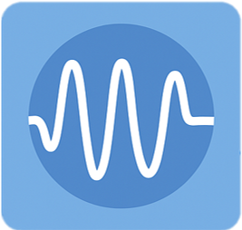
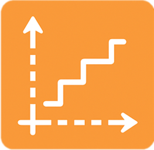
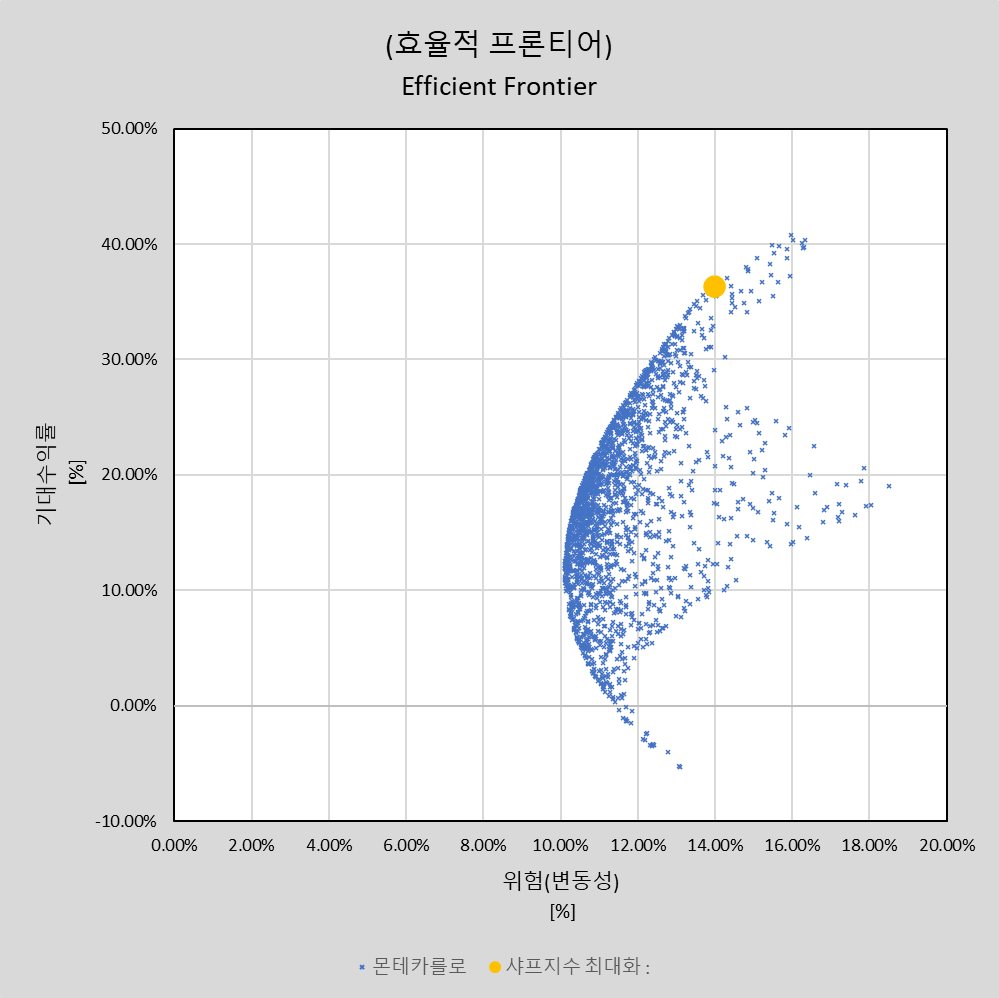
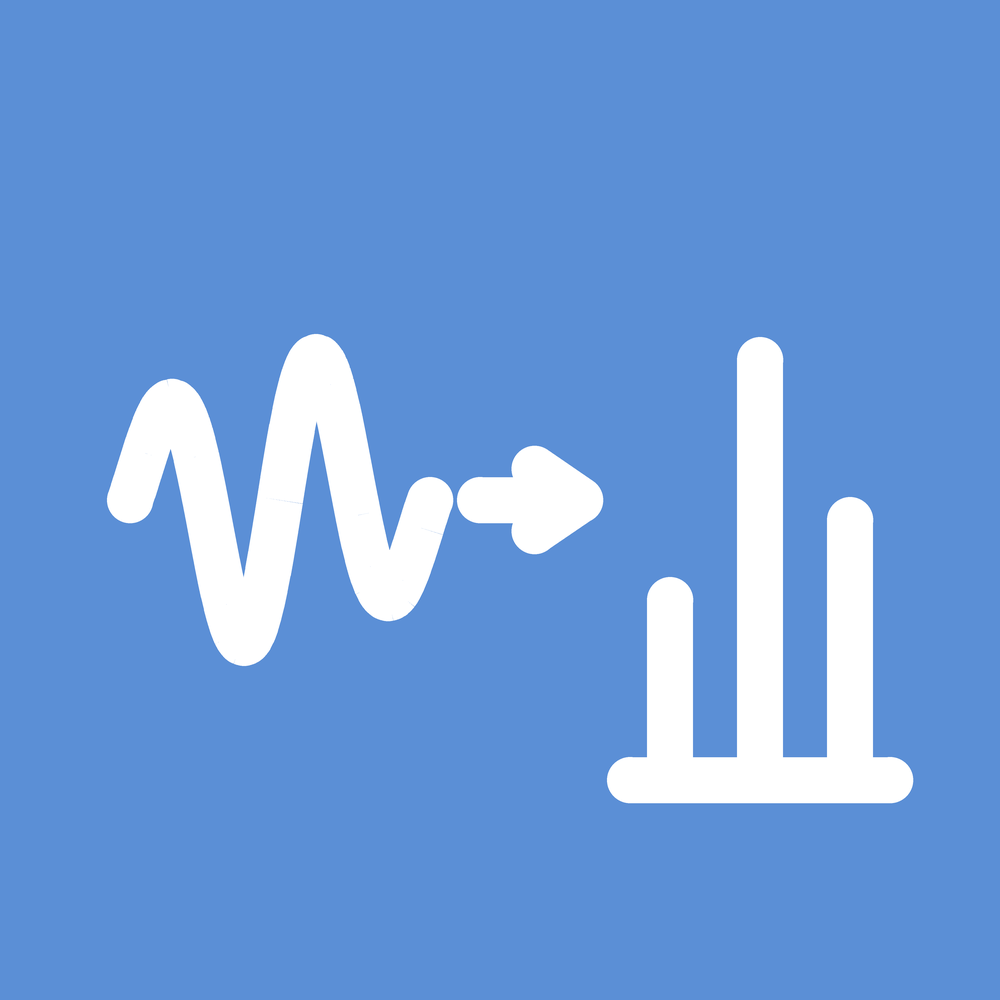
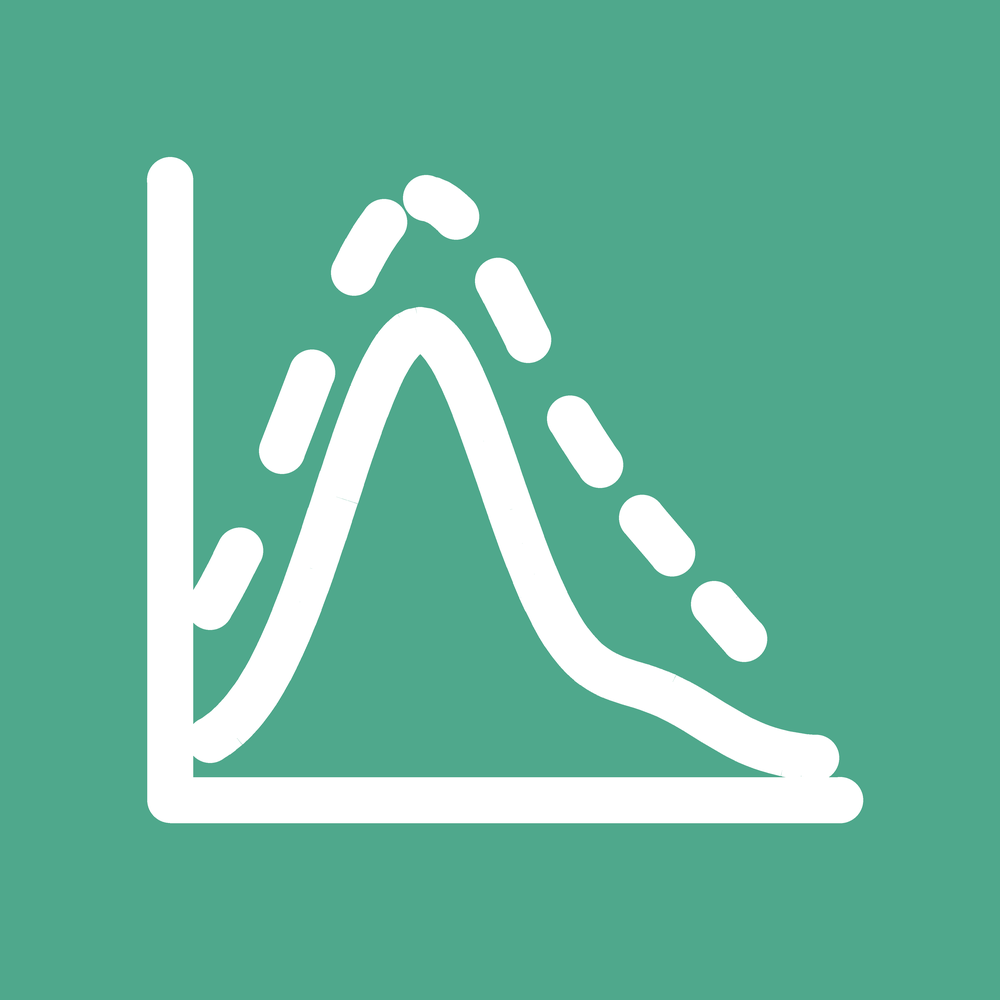
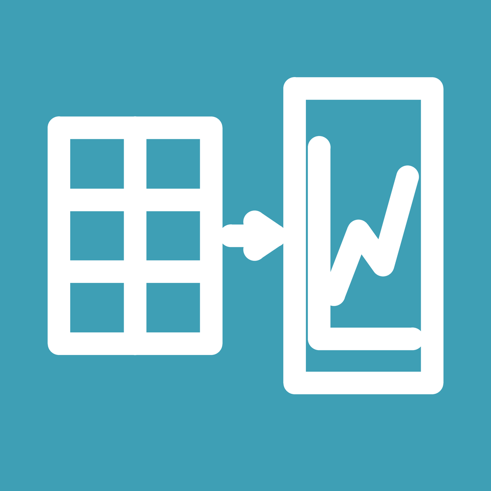
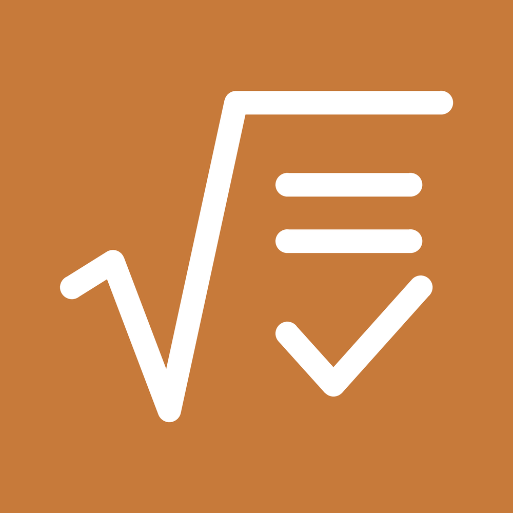
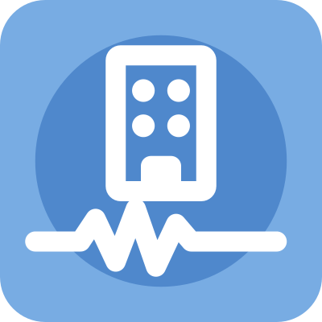

This program was developed to check the coherence of three-directional seismic accelerations

This program converts amplified time histories acceleration into frequency-domain acceleration data using SRS (Shock Response Spectrum) analysis
(Perform SRS analysis on multiple IERS datasets simultaneously)

This project is to plot the efficient frontier of Modern Portfolio Theory and to observe the nonlinear relationship between the two objectives of return and risk

This program converts acceleration time histories into frequency-domain amplitude spectra using FFT and finds the dominant frequencies of the measured signal.
This program calculates the area, centroid and moment of inertia of weld line groups so that weld stresses can be checked for seismic loads.

This program checks that the test response spectrum envelops the required response spectrum at every frequency from 0.5 to 50 Hz.
These APDL scripts run modal and response spectrum analysis of equipment models and combine the modal results with the SRSS method.

This program reads spectrum data from Excel, plots the RRS and TRS graphs and places them in a Word report automatically.
This program reads ANSYS nodal reaction files and sums the anchor loads in X, Y and Z into an Excel table for the anchor check.
This program turns the ANSYS modal participation factor output into a Word table and marks the governing modes in each direction.

A Mathcad style calculation sheet written in Python that evaluates equations with units, functions and arrays and prints the sheet to PDF.

Seismic qualification and FE modeling of structures with ANSYS Mechanical and APDL